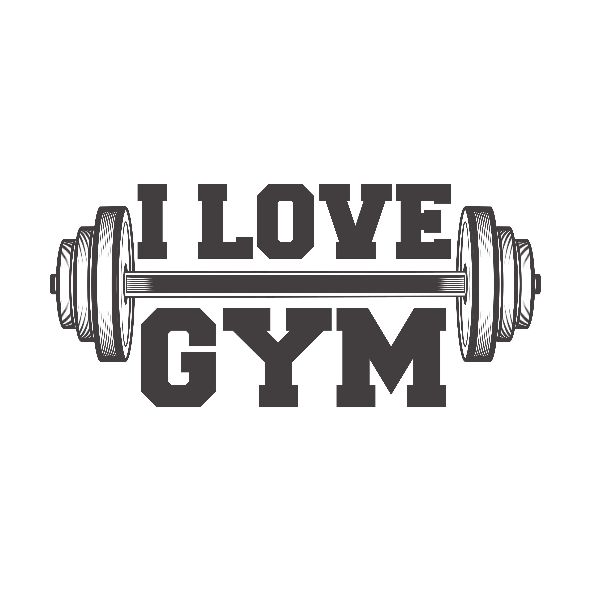

A NiLu termékeket arra terveztünk, hogy segítsenek túlszárnyalni teljesítőképességed határait. Nem számít, hogy a hosszú irodai órák mellett jársz edzeni, vagy a profi testépítés a hivatásod, a saját fejlesztésű táplálékkiegészítőinkkel elérheted a következő szintet. Webáruházunkban közvetlenül a gyártótól vásárolhatod meg a NiLu termékeket, mint például fehérjeporokat (közöttük Európa egyik legjobb és legnépszerűbb fehérjekészítményét, az Iso Whey Zero-t), edzés előtti formulákat, vagy akár a diétákat támogató készítményeket és vitaminokat. Választékunkban többek között találsz még izomtömegnövelőket, aminosavakat, vagy akár különböző állóképességi sportok kiegészítőit is.
Nem elégszünk meg az átlagos eredményekkel, hanem folyamatos kutatásokkal és fejlesztésekkel új termékcsaládokat alkotunk meg, mint például a laktóz- és gluténmentes variációk, amik az arra érzékenyek számára is megfelelő alternatívát kínálnak. Több, mint 500 munkatársunk mellett együtt dolgozunk olyan sportolókkal is, akik a NiLu küldetését: az egészséges életmódot, a sportolói csúcsteljesítményt képviselik, és erre inspirálják követőiket is. Vannak közöttük testépítők és fitneszversenyzők, mint Ulisses, Stephanie Davis és Oczella Eszter. A szponzoráltjaink teljes listáját itt tekintheted meg.
Nálunk mindent megtalálsz, ha fogyni vagy izmosodni szeretnél, növelni akarod a teljesítményedet, vagy többet tennél az gészségedért. Étrend-kiegészítőinket a kiváló minőség és a harmonikus ízvilág jellemzi. Több mint 800 termékvariációt kínálunk, köztük fehérjeporokat széles választékban, aminosav készítményeket, különböző szeleteket, edzés előtti formulákat, állóképességi sportokhoz kapcsolódó termékeket, testsúlykontroll-formulákat, több mint 40, magas hatóanyagtartalmú vitaminkészítményt. Figyelünk arra, hogy portfóliónkban cukor-, laktóz- és gluténmentes termékek is elérhetőek legyenek, és a vegánok számára is kínáljunk alternatívát.
(copy biotechusa)